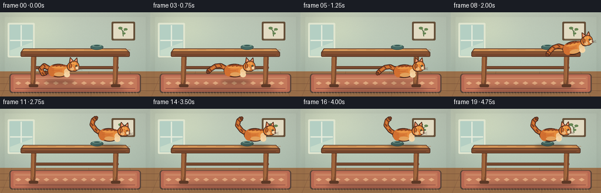
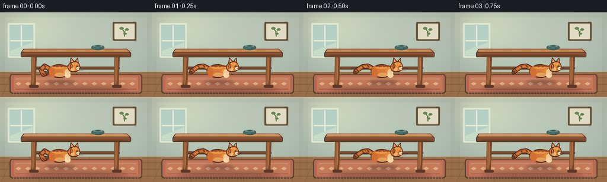
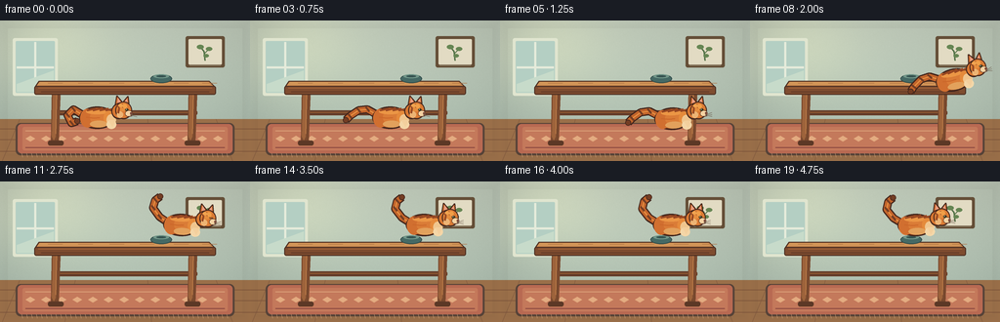
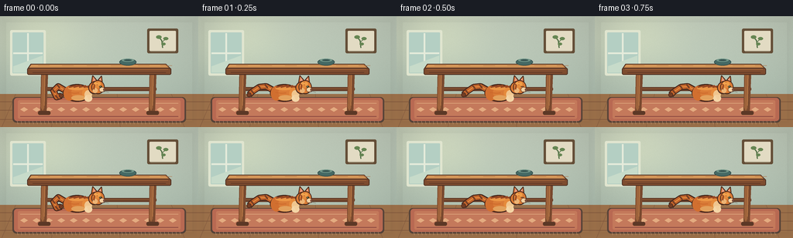

CODING AGENTS AS PIXEL WORLD MODELS
traex/DeepSeek-V4.1-Flash · dynamic_spatial_relationship_0014
点击播放 · 原生 RGB 像素
逐轮保存的候选
回放视频、检查图与代码变化。
每份候选均可单独播放。实际图片检查记录在下方工具轨迹中。
候选 01播放与检查图
点击播放 · 原生 RGB 像素


展开代码变化
--- 上一保存版本
+++ 本次保存版本
@@ -0,0 +1,510 @@
+"""Procedurally render a cat moving from beneath a table to its top."""
+
+from __future__ import annotations
+
+import math
+from pathlib import Path
+
+import numpy as np
+from PIL import Image, ImageDraw, ImageFilter
+
+import artifact_io
+
+
+WIDTH = 256
+HEIGHT = 144
+FRAMES = 20
+FPS = 4
+SS = 4 # Supersampling factor for smooth miniature details.
+
+
+def scaled(values):
+ return tuple(round(value * SS) for value in values)
+
+
+def rgba(color):
+ return tuple(color) + ((255,) if len(color) == 3 else ())
+
+
+def lerp(a, b, t):
+ return a + (b - a) * t
+
+
+def smoothstep(t):
+ t = max(0.0, min(1.0, t))
+ return t * t * (3.0 - 2.0 * t)
+
+
+def rounded_rect(draw, box, radius, fill, outline=None, width=1):
+ draw.rounded_rectangle(scaled(box), radius=round(radius * SS), fill=fill,
+ outline=outline, width=round(width * SS))
+
+
+def polygon(draw, points, fill, outline=None, width=1):
+ pts = [scaled(point) for point in points]
+ draw.polygon(pts, fill=fill)
+ if outline is not None:
+ draw.line(pts + [pts[0]], fill=outline, width=round(width * SS), joint="curve")
+
+
+def ellipse(draw, box, fill, outline=None, width=1):
+ draw.ellipse(scaled(box), fill=fill, outline=outline, width=round(width * SS))
+
+
+def line(draw, points, fill, width, joint="curve"):
+ draw.line([scaled(point) for point in points], fill=fill,
+ width=max(1, round(width * SS)), joint=joint)
+
+
+def gradient_background():
+ y = np.linspace(0.0, 1.0, HEIGHT * SS)[:, None]
+ x = np.linspace(0.0, 1.0, WIDTH * SS)[None, :]
+ wall_top = np.array([196, 207, 190], dtype=float)
+ wall_bottom = np.array([169, 188, 174], dtype=float)
+ image = wall_top[None, None, :] * (1.0 - y[:, :, None])
+ image += wall_bottom[None, None, :] * y[:, :, None]
+ image = np.repeat(image, WIDTH * SS, axis=1)
+
+ glow = np.exp(-(((x - 0.18) / 0.25) ** 2 + ((y - 0.18) / 0.35) ** 2))
+ image += glow[:, :, None] * np.array([22, 20, 10])
+ vignette = 1.0 - 0.14 * (((x - 0.52) / 0.72) ** 2 + ((y - 0.52) / 0.8) ** 2)
+ image *= vignette[:, :, None]
+
+ rng = np.random.default_rng(14)
+ grain = rng.normal(0.0, 2.0, (HEIGHT * SS, WIDTH * SS, 1))
+ image += grain
+ return Image.fromarray(np.clip(image, 0, 255).astype(np.uint8), "RGB")
+
+
+def draw_wall_details(draw):
+ # Framed botanical print keeps the background lived-in without competing
+ # with the cat or table.
+ rounded_rect(draw, (190, 16, 230, 48), 2, (100, 78, 55))
+ rounded_rect(draw, (193, 19, 227, 45), 1, (226, 219, 195))
+ line(draw, [(210, 41), (209, 32), (205, 27)], (83, 113, 71), 1.4)
+ line(draw, [(209, 34), (214, 29)], (83, 113, 71), 1.2)
+ for center, radii in [((205, 27), (3.6, 2.2)), ((214, 29), (3.2, 2.0)),
+ ((211, 36), (2.8, 1.7))]:
+ ellipse(draw, (center[0] - radii[0], center[1] - radii[1],
+ center[0] + radii[0], center[1] + radii[1]), (102, 134, 83))
+ line(draw, [(194, 46), (226, 46)], (145, 132, 105), 0.8)
+
+ # A soft window shape at left supplies directional daylight.
+ rounded_rect(draw, (13, 18, 59, 77), 2, (224, 229, 207))
+ rounded_rect(draw, (16, 21, 56, 74), 1, (180, 207, 195))
+ line(draw, [(36, 22), (36, 73)], (229, 235, 219), 2.2)
+ line(draw, [(17, 48), (55, 48)], (229, 235, 219), 2.2)
+ polygon(draw, [(17, 65), (55, 51), (55, 73), (17, 73)], (199, 219, 202))
+
+
+def draw_floor_and_rug(draw):
+ # Floor boards and their perspective seams.
+ polygon(draw, [(0, 101), (256, 101), (256, 144), (0, 144)], (154, 111, 73))
+ for y in (111, 122, 134):
+ line(draw, [(0, y), (256, y)], (126, 85, 59), 0.65)
+ board_edges = [(20, 101, 2, 144), (77, 101, 66, 144), (151, 101, 155, 144),
+ (221, 101, 238, 144)]
+ for x1, y1, x2, y2 in board_edges:
+ line(draw, [(x1, y1), (x2, y2)], (128, 88, 61), 0.55)
+
+ # Woven rug beneath the table.
+ rounded_rect(draw, (16, 105, 240, 138), 5, (87, 67, 56), width=1)
+ rounded_rect(draw, (18, 106, 238, 136), 4, (184, 105, 82))
+ rounded_rect(draw, (23, 109, 233, 133), 2, (196, 121, 91), width=0.7)
+ line(draw, [(26, 113), (230, 113)], (222, 166, 126), 0.8)
+ line(draw, [(26, 130), (230, 130)], (139, 72, 64), 0.9)
+ for x in range(31, 228, 16):
+ polygon(draw, [(x, 118), (x + 5, 121), (x, 124), (x - 5, 121)],
+ (227, 171, 128))
+ # Rug fringe.
+ for x in range(22, 236, 5):
+ line(draw, [(x, 136), (x + 1, 140)], (208, 161, 122), 0.55)
+
+
+def draw_table_back(draw):
+ # Rear stretcher and the darker rear edges establish depth under the table.
+ rounded_rect(draw, (58, 92, 202, 97), 2, (101, 61, 41))
+ line(draw, [(61, 94), (199, 94)], (148, 91, 52), 1.0)
+
+
+def draw_table(draw):
+ # Legs are tapered and stand on the rug.
+ for x in (53, 193):
+ polygon(draw, [(x, 72), (x + 9, 72), (x + 7, 124), (x + 2, 128),
+ (x - 1, 124)], (121, 73, 46))
+ polygon(draw, [(x + 1, 74), (x + 5, 74), (x + 4, 119), (x + 2, 123),
+ (x, 119)], (157, 99, 59))
+ rounded_rect(draw, (x - 4, 123, x + 12, 128), 2, (92, 56, 38))
+ line(draw, [(x + 5, 76), (x + 4, 116)], (195, 130, 74), 0.7)
+
+ # Tabletop surface and thick front edge.
+ polygon(draw, [(40, 62), (214, 62), (220, 68), (36, 68)], (190, 126, 72),
+ outline=(80, 49, 35), width=1.1)
+ polygon(draw, [(41, 63), (213, 63), (216, 66), (38, 66)], (211, 150, 88))
+ rounded_rect(draw, (35, 67, 221, 76), 2, (126, 76, 47),
+ outline=(76, 46, 33), width=0.9)
+ line(draw, [(39, 69), (217, 69)], (171, 105, 59), 0.8)
+ line(draw, [(42, 73), (214, 73)], (91, 52, 37), 0.7)
+ for offset in (0, 31, 63, 94, 129, 158):
+ x = 49 + offset
+ line(draw, [(x, 64), (x + 15, 64)], (176, 112, 65), 0.5)
+ # A tiny bowl gives the tabletop scale and makes the landing area obvious.
+ ellipse(draw, (154, 55, 176, 64), (69, 105, 100),
+ outline=(42, 69, 68), width=0.8)
+ ellipse(draw, (157, 55, 173, 59), (114, 151, 137))
+ ellipse(draw, (160, 56, 170, 58), (53, 83, 80))
+
+
+def draw_table_shadow(base):
+ shadow = Image.new("RGBA", base.size, (0, 0, 0, 0))
+ draw = ImageDraw.Draw(shadow)
+ ellipse(draw, (44, 126, 215, 137), (62, 39, 33, 78))
+ shadow = shadow.filter(ImageFilter.GaussianBlur(4 * SS))
+ base.alpha_composite(shadow)
+
+
+def cat_leg_points(kind, phase, crouch):
+ swing = math.sin(phase)
+ opposite = math.sin(phase + math.pi)
+ if kind == "front_near":
+ hip = (10, 3)
+ paw = (15 + 4.0 * swing, 17 + crouch * 1.5)
+ knee = (13 + 2.0 * swing, 10 + crouch)
+ elif kind == "front_far":
+ hip = (5, 3)
+ paw = (9 + 4.0 * opposite, 17 + crouch * 1.2)
+ knee = (7 + 2.0 * opposite, 10 + crouch)
+ elif kind == "hind_near":
+ hip = (-13, 3)
+ paw = (-8 + 3.5 * opposite, 17 + crouch * 1.2)
+ knee = (-11 + 2.0 * opposite, 10 + crouch)
+ else:
+ hip = (-17, 3)
+ paw = (-21 + 3.5 * swing, 17 + crouch)
+ knee = (-18 + 2.0 * swing, 10 + crouch)
+ return hip, knee, paw
+
+
+def draw_cat_leg(draw, kind, phase, crouch, origin, far=False):
+ hip, knee, paw = cat_leg_points(kind, phase, crouch)
+ ox, oy = origin
+
+ def P(point):
+ return ((ox + point[0]) * SS, (oy + point[1]) * SS)
+
+ fur = (165, 83, 39) if far else (201, 105, 45)
+ outline = (70, 40, 29)
+ points = [P(hip), P(knee), P(paw)]
+ draw.line(points, fill=outline, width=round(6.2 * SS), joint="curve")
+ draw.line(points, fill=fur, width=round(4.2 * SS), joint="curve")
+ draw.ellipse((P((paw[0] - 3.2, paw[1] - 1.5)), P((paw[0] + 3.3, paw[1] + 2.2))),
+ fill=(234, 192, 139) if not far else (205, 158, 111),
+ outline=outline, width=round(0.55 * SS))
+
+
+def tail_points(style):
+ if style == "run":
+ return [(-16, -4), (-25, -9), (-34, -8), (-43, -2), (-47, 2)]
+ if style == "up":
+ return [(-16, -3), (-24, -8), (-31, -17), (-29, -25), (-24, -29)]
+ if style == "curl":
+ return [(-16, -3), (-26, -9), (-32, -3), (-28, 5), (-22, 3)]
+ return [(-16, -3), (-26, -8), (-33, -5), (-36, 2), (-40, 5)]
+
+
+def draw_tail(draw, style):
+ points = tail_points(style)
+ line(draw, points, (68, 38, 28), 8.5)
+ line(draw, points, (194, 100, 43), 6.1)
+ line(draw, points[:-1], (229, 143, 67), 1.2)
+ # Dark bands make the tail read as tabby at very small scale.
+ for index in (1, 2, 3):
+ x, y = points[index]
+ line(draw, [(x - 1.5, y - 2.4), (x + 2.1, y + 2.1)], (117, 61, 34), 2.0)
+ tip_x, tip_y = points[-1]
+ ellipse(draw, (tip_x - 2.8, tip_y - 2.8, tip_x + 2.8, tip_y + 2.8),
+ (115, 61, 36), outline=(68, 38, 28), width=0.65)
+
+
+def draw_cat_local(phase, crouch, tail_style, blink=False, ear_twitch=0.0):
+ layer = Image.new("RGBA", (520, 360), (0, 0, 0, 0))
+ draw = ImageDraw.Draw(layer)
+ ox, oy = 260, 190
+
+ def P(x, y):
+ return (ox + x * SS, oy + y * SS)
+
+ def E(box, fill, outline=None, width=1):
+ draw.ellipse((P(box[0], box[1]), P(box[2], box[3])), fill=fill,
+ outline=outline, width=max(1, round(width * SS)))
+
+ def L(points, fill, width):
+ draw.line([P(x, y) for x, y in points], fill=fill,
+ width=max(1, round(width * SS)), joint="curve")
+
+ def Poly(points, fill, outline=None, width=1):
+ pts = [P(x, y) for x, y in points]
+ draw.polygon(pts, fill=fill)
+ if outline is not None:
+ draw.line(pts + [pts[0]], fill=outline,
+ width=max(1, round(width * SS)), joint="curve")
+
+ # Tail sits behind the body.
+ points = tail_points(tail_style)
+ tail_pts = [P(x, y) for x, y in points]
+ draw.line(tail_pts, fill=(68, 38, 28), width=round(8.5 * SS), joint="curve")
+ draw.line(tail_pts, fill=(194, 100, 43), width=round(6.1 * SS), joint="curve")
+ draw.line(tail_pts[:-1], fill=(232, 145, 66), width=round(1.3 * SS), joint="curve")
+ for index in (1, 2, 3):
+ x, y = points[index]
+ L([(x - 1.7, y - 2.5), (x + 2.0, y + 2.2)], (116, 61, 35), 2.0)
+ tx, ty = points[-1]
+ E((tx - 3.0, ty - 3.0, tx + 3.0, ty + 3.0), (115, 61, 36),
+ outline=(68, 38, 28), width=0.65)
+
+ # Far legs first.
+ draw_cat_leg(draw, "front_far", phase + math.pi, crouch, (ox, oy), far=True)
+ draw_cat_leg(draw, "hind_far", phase, crouch, (ox, oy), far=True)
+
+ # Main torso: outline, shadow, orange fur, and a warm top highlight.
+ E((-20, -12, 17, 11), (68, 39, 29), width=1.1)
+ E((-18.5, -10.5, 16, 9.5), (188, 92, 38))
+ E((-19, -9.5, -4, 9.5), (209, 111, 48))
+ E((-9, -9.5, 15.5, 7.8), (218, 124, 55))
+ E((-13, -9.2, 10, -4.0), (235, 150, 69))
+ E((5, -7.5, 17, 7.2), (229, 138, 59))
+ E((-9, 2.5, 9, 9.5), (226, 161, 92))
+ E((8, -4.0, 17.5, 7.5), (240, 197, 142))
+
+ # Torso stripes.
+ for x, length, tilt in [(-12, 9, -2.2), (-6, 10, -2.7), (1, 9, -2.1),
+ (7, 7, -1.5)]:
+ L([(x, -7.8), (x + length, -7.8 + tilt)], (151, 71, 34), 2.0)
+ L([(-13, -1), (-5, 0), (1, -0.5)], (204, 104, 43), 1.3)
+
+ # Near legs over torso.
+ draw_cat_leg(draw, "front_near", phase, crouch, (ox, oy), far=False)
+ draw_cat_leg(draw, "hind_near", phase + math.pi, crouch, (ox, oy), far=False)
+
+ # Chest ruff.
+ E((8, 2, 18, 11), (244, 214, 167))
+ Poly([(10, 2), (14, 9), (18, 2)], (243, 207, 157))
+
+ # Neck and head.
+ E((13, -15, 28, 1), (68, 39, 29), width=1.0)
+ E((14.2, -13.7, 27, -0.3), (215, 119, 50))
+ # Ears.
+ ear_lift = ear_twitch
+ Poly([(17, -14), (18.5, -23 - ear_lift), (24, -16.5)],
+ (205, 105, 43), outline=(68, 39, 29), width=0.9)
+ Poly([(25, -16.5), (30, -22.5 - ear_lift * 0.35), (31, -13.5)],
+ (208, 108, 44), outline=(68, 39, 29), width=0.9)
+ Poly([(19.0, -15.7), (19.8, -21.0 - ear_lift), (22.5, -16.4)],
+ (232, 157, 130))
+ Poly([(26.0, -16.1), (29.0, -20.2 - ear_lift * 0.3), (29.6, -14.7)],
+ (232, 157, 130))
+ E((17, -17, 34, 1), (68, 39, 29), width=1.0)
+ E((18.2, -15.9, 33, -0.2), (218, 123, 52))
+ E((19, -15.2, 29, -7.0), (229, 141, 62))
+ # Muzzle and cheek.
+ E((27, -8, 34.5, -1.5), (245, 211, 163), outline=(83, 48, 34), width=0.55)
+ E((18.5, -7, 25, -0.2), (237, 180, 116))
+ # Eyes and face markings.
+ if blink:
+ L([(27.0, -9.0), (30.5, -8.6)], (59, 43, 31), 0.9)
+ else:
+ E((27.0, -10.0, 30.6, -7.2), (78, 92, 46), outline=(63, 42, 27), width=0.4)
+ E((28.4, -9.5, 29.6, -7.8), (30, 30, 24))
+ E((28.0, -9.4, 28.8, -8.7), (246, 238, 206))
+ E((32.2, -5.8, 34.0, -4.0), (113, 60, 49))
+ L([(33.0, -3.7), (33.0, -1.8)], (91, 53, 43), 0.6)
+ L([(29.0, -2.2), (34.0, -1.8), (30.0, -0.8)], (91, 53, 43), 0.5)
+ # Whiskers.
+ for end_y in (-5.4, -3.4, -1.4):
+ L([(32.0, -3.2), (39.0, end_y)], (91, 70, 56), 0.38)
+ L([(18, -14), (21, -10.5), (20, -5)], (149, 72, 35), 1.7)
+ L([(24, -14.5), (25, -10.5)], (151, 73, 35), 1.3)
+ # Nose bridge and forehead highlight.
+ E((24.5, -14.5, 29.0, -9.8), (240, 159, 72))
+ E((20.0, -14.2, 25.0, -11.3), (241, 164, 80))
+
+ return layer, (ox, oy)
+
+
+def paste_cat(base, cat, anchor, angle, center):
+ # Rotate around the local origin so pose changes do not make the cat jitter.
+ anchor_x, anchor_y = anchor
+ origin_x, origin_y = center
+ rotated = cat.rotate(angle, resample=Image.Resampling.BICUBIC, expand=False,
+ center=(origin_x, origin_y))
+ paste_x = round(anchor_x * SS - origin_x)
+ paste_y = round(anchor_y * SS - origin_y)
+ base.alpha_composite(rotated, (paste_x, paste_y))
+
+
+def draw_cat_shadow(base, x, y, scale_x=1.0, opacity=90):
+ shadow = Image.new("RGBA", base.size, (0, 0, 0, 0))
+ draw = ImageDraw.Draw(shadow)
+ ellipse(draw, (x - 25 * scale_x, y - 3, x + 26 * scale_x, y + 4),
+ (52, 34, 27, opacity))
+ shadow = shadow.filter(ImageFilter.GaussianBlur(2.5 * SS))
+ base.alpha_composite(shadow)
+
+
+def cat_state(frame):
+ if frame <= 3:
+ t = frame / 3.0
+ return {
+ "x": lerp(101, 145, smoothstep(t)),
+ "y": 100,
+ "angle": 0,
+ "phase": t * math.pi * 1.4,
+ "crouch": 0.45,
+ "tail": "run" if frame > 0 else "curl",
+ "blink": frame == 2,
+ "ground": 118,
+ "layer": "under",
+ "shadow_scale": 1.0,
+ }
+ if frame == 4:
+ return {
+ "x": 169, "y": 103, "angle": -4, "phase": math.pi * 0.6,
+ "crouch": 1.4, "tail": "run", "blink": False, "ground": 118,
+ "layer": "under", "shadow_scale": 1.1,
+ }
+ if frame == 5:
+ return {
+ "x": 178, "y": 101, "angle": 2, "phase": math.pi * 1.2,
+ "crouch": 1.8, "tail": "run", "blink": False, "ground": 118,
+ "layer": "front", "shadow_scale": 1.1,
+ }
+ if frame == 6:
+ return {
+ "x": 192, "y": 88, "angle": 18, "phase": math.pi * 1.55,
+ "crouch": -0.6, "tail": "run", "blink": False, "ground": 118,
+ "layer": "front", "shadow_scale": 0.9,
+ }
+ if frame == 7:
+ return {
+ "x": 205, "y": 74, "angle": 24, "phase": math.pi * 1.85,
+ "crouch": -1.1, "tail": "run", "blink": False, "ground": 118,
+ "layer": "front", "shadow_scale": 0.75,
+ }
+ if frame == 8:
+ return {
+ "x": 210, "y": 61, "angle": 12, "phase": math.pi * 2.15,
+ "crouch": -0.5, "tail": "run", "blink": False, "ground": 118,
+ "layer": "front", "shadow_scale": 0.55,
+ }
+ if frame == 9:
+ return {
+ "x": 202, "y": 49, "angle": 4, "phase": math.pi * 2.35,
+ "crouch": 0.2, "tail": "run", "blink": False, "ground": 63,
+ "layer": "top", "shadow_scale": 0.8,
+ }
+ if frame == 10:
+ return {
+ "x": 192, "y": 47, "angle": 0, "phase": math.pi * 2.5,
+ "crouch": 1.0, "tail": "up", "blink": False, "ground": 63,
+ "layer": "top", "shadow_scale": 1.0,
+ }
+ if frame == 11:
+ return {
+ "x": 187, "y": 45, "angle": -2, "phase": math.pi * 0.2,
+ "crouch": 0.4, "tail": "up", "blink": True, "ground": 63,
+ "layer": "top", "shadow_scale": 1.0,
+ }
+ if frame <= 15:
+ t = (frame - 11) / 4.0
+ return {
+ "x": lerp(187, 178, smoothstep(t)),
+ "y": 45,
+ "angle": 0,
+ "phase": t * math.pi * 1.1,
+ "crouch": 0.2,
+ "tail": "up",
+ "blink": False,
+ "ground": 63,
+ "layer": "top",
+ "shadow_scale": 1.0,
+ }
+ if frame <= 18:
+ t = (frame - 15) / 3.0
+ return {
+ "x": lerp(178, 172, smoothstep(t)),
+ "y": 45,
+ "angle": 0,
+ "phase": math.pi * 1.1 + t * math.pi * 0.35,
+ "crouch": 0.05,
+ "tail": "up",
+ "blink": frame == 17,
+ "ground": 63,
+ "layer": "top",
+ "shadow_scale": 1.0,
+ }
+ return {
+ "x": 171, "y": 45, "angle": 1.2, "phase": math.pi * 1.5,
+ "crouch": 0.0, "tail": "up", "blink": False, "ground": 63,
+ "layer": "top", "shadow_scale": 1.0,
+ }
+
+
+def draw_frame(frame):
+ image = gradient_background().convert("RGBA")
+ draw = ImageDraw.Draw(image, "RGBA")
+ draw_wall_details(draw)
+ draw_floor_and_rug(draw)
+ draw_table_shadow(image)
+ draw = ImageDraw.Draw(image, "RGBA")
+ draw_table_back(draw)
+
+ state = cat_state(frame)
+ cat, center = draw_cat_local(
+ state["phase"], state["crouch"], state["tail"], state["blink"],
+ ear_twitch=0.8 if frame in (6, 7) else 0.0,
+ )
+
+ if state["layer"] == "under":
+ draw_cat_shadow(image, state["x"], state["ground"], state["shadow_scale"])
+ paste_cat(image, cat, (state["x"], state["y"]), state["angle"], center)
+ draw = ImageDraw.Draw(image, "RGBA")
+ draw_table(draw)
+ else:
+ draw = ImageDraw.Draw(image, "RGBA")
+ draw_table(draw)
+ if state["layer"] == "top":
+ draw_cat_shadow(image, state["x"] - 2, state["ground"] + 1,
+ state["shadow_scale"], opacity=85)
+ elif frame <= 8:
+ # A soft floor shadow lingers under the airborne cat.
+ fade = max(0.0, 1.0 - (frame - 5) / 4.0)
+ draw_cat_shadow(image, state["x"] - 10, 118, 1.0,
+ opacity=round(42 * fade))
+ paste_cat(image, cat, (state["x"], state["y"]), state["angle"], center)
+
+ # Subtle atmospheric edge darkening ties the scene together.
+ overlay = Image.new("RGBA", image.size, (0, 0, 0, 0))
+ odraw = ImageDraw.Draw(overlay)
+ for i in range(8):
+ alpha = 3 + i
+ odraw.rectangle((i * SS, i * SS, WIDTH * SS - i * SS, HEIGHT * SS - i * SS),
+ outline=(30, 28, 23, alpha), width=SS)
+ image.alpha_composite(overlay)
+ return np.asarray(image.convert("RGB").resize((WIDTH, HEIGHT),
+ Image.Resampling.LANCZOS))
+
+
+def generate():
+ frames = np.stack([draw_frame(index) for index in range(FRAMES)])
+ return frames
+
+
+def main():
+ case_dir = Path(__file__).resolve().parent
+ frames = generate()
+ artifact_io.save(frames, case_dir)
+ print(f"Saved {len(frames)} frames to {case_dir}")
+
+
+if __name__ == "__main__":
+ main()
候选 02播放与检查图
点击播放 · 原生 RGB 像素

展开代码变化
--- 上一保存版本
+++ 本次保存版本
@@ -158,7 +158,7 @@
def draw_table_shadow(base):
shadow = Image.new("RGBA", base.size, (0, 0, 0, 0))
draw = ImageDraw.Draw(shadow)
- ellipse(draw, (44, 126, 215, 137), (62, 39, 33, 78))
+ ellipse(draw, scaled((44, 126, 215, 137)), (62, 39, 33, 78))
shadow = shadow.filter(ImageFilter.GaussianBlur(4 * SS))
base.alpha_composite(shadow)
@@ -345,7 +345,8 @@
def draw_cat_shadow(base, x, y, scale_x=1.0, opacity=90):
shadow = Image.new("RGBA", base.size, (0, 0, 0, 0))
draw = ImageDraw.Draw(shadow)
- ellipse(draw, (x - 25 * scale_x, y - 3, x + 26 * scale_x, y + 4),
+ ellipse(draw, scaled((x - 25 * scale_x, y - 3,
+ x + 26 * scale_x, y + 4)),
(52, 34, 27, opacity))
shadow = shadow.filter(ImageFilter.GaussianBlur(2.5 * SS))
base.alpha_composite(shadow)
候选 03播放与检查图
点击播放 · 原生 RGB 像素


展开代码变化
--- 上一保存版本
+++ 本次保存版本
@@ -73,7 +73,7 @@
rng = np.random.default_rng(14)
grain = rng.normal(0.0, 2.0, (HEIGHT * SS, WIDTH * SS, 1))
image += grain
- return Image.fromarray(np.clip(image, 0, 255).astype(np.uint8), "RGB")
+ return Image.fromarray(np.clip(image, 0, 255).astype(np.uint8))
def draw_wall_details(draw):
@@ -108,17 +108,17 @@
line(draw, [(x1, y1), (x2, y2)], (128, 88, 61), 0.55)
# Woven rug beneath the table.
- rounded_rect(draw, (16, 105, 240, 138), 5, (87, 67, 56), width=1)
- rounded_rect(draw, (18, 106, 238, 136), 4, (184, 105, 82))
- rounded_rect(draw, (23, 109, 233, 133), 2, (196, 121, 91), width=0.7)
- line(draw, [(26, 113), (230, 113)], (222, 166, 126), 0.8)
- line(draw, [(26, 130), (230, 130)], (139, 72, 64), 0.9)
+ rounded_rect(draw, (16, 105, 240, 138), 5, (46, 69, 65), width=1)
+ rounded_rect(draw, (18, 106, 238, 136), 4, (74, 113, 105))
+ rounded_rect(draw, (23, 109, 233, 133), 2, (91, 137, 125), width=0.7)
+ line(draw, [(26, 113), (230, 113)], (175, 184, 139), 0.8)
+ line(draw, [(26, 130), (230, 130)], (47, 83, 79), 0.9)
for x in range(31, 228, 16):
polygon(draw, [(x, 118), (x + 5, 121), (x, 124), (x - 5, 121)],
- (227, 171, 128))
+ (210, 176, 108))
# Rug fringe.
for x in range(22, 236, 5):
- line(draw, [(x, 136), (x + 1, 140)], (208, 161, 122), 0.55)
+ line(draw, [(x, 136), (x + 1, 140)], (184, 184, 143), 0.55)
def draw_table_back(draw):
候选 04播放与检查图
可观测工具轨迹
实际执行的命令与返回图片。
命令 1exit 0
/bin/bash -c "sed -n '1,240p' GENERATION_RULES.md"
命令 2exit 0
/bin/bash -c 'cat task_spec.json'
命令 3exit 0
/bin/bash -c 'cat prompt.txt'
命令 4exit 0
/bin/bash -c "find . -maxdepth 3 -type f -printf '%p\\n' | sort | sed -n '1,240p'"
命令 5exit 0
/bin/bash -c "git status --short && printf '\\n--- branches ---\\n' && git branch --show-current"
命令 6exit 0
/bin/bash -c "sed -n '1,260p' artifact_io.py"
命令 7exit 0
/bin/bash -c "python - <<'PY'
import sys
print(sys.version)
try:
import numpy as np; print('numpy', np.__version__)
except Exception as e: print('numpy unavailable', e)
try:
from PIL import Image; print('PIL available')
except Exception as e: print('PIL unavailable', e)
try:
import imageio; print('imageio', imageio.__version__)
except Exception as e: print('imageio unavailable', e)
try:
import cv2; print('cv2', cv2.__version__)
except Exception as e: print('cv2 unavailable', e)
PY"命令 8exit 0
/bin/bash -c "sed -n '1,240p' player_template.html"
命令 9exit 0
/bin/bash -c 'python generate.py'
命令 10exit 0
/bin/bash -c 'command -v chafa || true; command -v viu || true; command -v jp2 || true; command -v img2txt || true; command -v convert || true'
命令 11exit 0
/bin/bash -c "ls -lh pixels.npz index.html inspection.png transition_check.png frames/*.png | sed -n '1,40p'"
命令 12exit 0
/bin/bash -c "python - <<'PY'
from PIL import Image
import numpy as np
for i in [0,3,5,7,9,10,15,19]:
a=np.array(Image.open(f'frames/{i:02d}.png'))
print(i, 'mean', a.mean(axis=(0,1)).round(1), 'std', a.std(axis=(0,1)).round(1), 'unique', len(np.unique(a.reshape(-1,3),axis=0)))
PY"命令 13exit 0
/bin/bash -c "python - <<'PY'
from PIL import Image
import numpy as np
for i in range(20):
a=np.array(Image.open(f'frames/{i:02d}.png')).astype(int)
# orange/cream cat-like colors; exclude brown table/rug by requiring stronger red and bright
m=(a[:,:,0]>175)&(a[:,:,1]>85)&(a[:,:,1]<220)&(a[:,:,2]<185)&((a[:,:,0]-a[:,:,2])>55)
ys,xs=np.where(m)
if len(xs): print(f'{i:02d}: cat pixels={len(xs):4d} bbox=({xs.min():3d},{ys.min():3d})-({xs.max():3d},{ys.max():3d}) centroid=({xs.mean():.1f},{ys.mean():.1f})')
else: print(i, 'none')
PY"命令 14exit 0
/bin/bash -c "command -v ffmpeg || true; python - <<'PY'
try:
import imageio_ffmpeg
print(imageio_ffmpeg.get_ffmpeg_exe())
except Exception as e: print('no imageio_ffmpeg',e)
PY"命令 15exit 0
/bin/bash -c "python - <<'PY'
from PIL import Image, ImageOps, ImageEnhance
import numpy as np
chars=' .,:;irsXA253hMHGS#9B&@'
for fi in (0,4,7,9,12,19):
im=Image.open(f'frames/{fi:02d}.png').convert('L')
# aspect correction and 96 columns
im=im.resize((96,27), Image.Resampling.LANCZOS)
a=np.array(im).astype(float)
a=(a-a.min())/(a.max()-a.min()+1e-6)
print(f'\\nFRAME {fi:02d}')
for row in a:
print(''.join(chars[min(len(chars)-1,int(v*(len(chars)-1)))] for v in row))
PY"命令 16exit 0
/bin/bash -c "python - <<'PY'
import importlib.util
from pathlib import Path
from PIL import Image, ImageDraw
import numpy as np
import generate
# Base scene without the cat, for measuring its rendered footprint.
im=generate.gradient_background().convert('RGBA')
d=ImageDraw.Draw(im,'RGBA')
generate.draw_wall_details(d); generate.draw_floor_and_rug(d); generate.draw_table_shadow(im)
d=ImageDraw.Draw(im,'RGBA'); generate.draw_table_back(d); generate.draw_table(d)
base=np.asarray(im.convert('RGB').resize((256,144),Image.Resampling.LANCZOS)).astype(int)
for i in range(20):
a=np.asarray(Image.open(f'frames/{i:02d}.png')).astype(int)
diff=np.max(np.abs(a-base),axis=2)>10
ys,xs=np.where(diff)
print(f'{i:02d} changed={diff.sum():5d} bbox={xs.min():3d},{ys.min():3d}..{xs.max():3d},{ys.max():3d}')
PY"命令 17exit 0
/bin/bash -c "python - <<'PY'
from PIL import Image
import numpy as np
for i in range(20):
a=np.asarray(Image.open(f'frames/{i:02d}.png')).astype(int)
# sample a stable strip on the wall; report frame-to-frame MAD
if i:
prev=np.asarray(Image.open(f'frames/{i-1:02d}.png')).astype(int)
d=np.abs(a-prev).mean()
print(f'{i-1:02d}->{i:02d}: {d:.2f}')
PY"命令 18exit 0
/bin/bash -c "python - <<'PY'
from PIL import Image
im=Image.open('inspection.png')
print(im.size)
PY"命令 19exit 0
/bin/bash -c 'python generate.py'
命令 20exit 0
/bin/bash -c "python - <<'PY'
from pathlib import Path
s=Path('index.html').read_text()
for needle in ('\"width\":256','\"height\":144','\"frames\":20','\"fps\":4.0','A cat is under the table'):
print(needle, needle in s)
print('html bytes', len(s))
PY"命令 21exit 0
/bin/bash -c "python - <<'PY'
import numpy as np
from PIL import Image
z=np.load('pixels.npz')['pixels']
print('pixels.npz', z.shape, z.dtype, 'min/max', int(z.min()), int(z.max()))
for i in range(20):
a=np.asarray(Image.open(f'frames/{i:02d}.png'))
assert a.shape==(144,256,3) and a.dtype==np.uint8
print('frames: 20 x 256 x 144 RGB; PNG sequence valid')
PY"命令 22exit 0
/bin/bash -c "python - <<'PY'
from PIL import Image
import numpy as np
for fi in (0,3,5,7,9,19):
a=np.asarray(Image.open(f'frames/{fi:02d}.png')).astype(int)
m=(a[:,:,0]>175)&(a[:,:,1]>75)&(a[:,:,1]<225)&(a[:,:,2]<190)&((a[:,:,0]-a[:,:,2])>55)
# exclude table/rug using the local crop around the known cat position.
x0,x1=55,245; y0,y1=5,130
crop=m[y0:y1,x0:x1]
ys,xs=np.where(crop)
print(f'frame {fi:02d}: orange bbox x={xs.min()+x0}..{xs.max()+x0}, y={ys.min()+y0}..{ys.max()+y0}, pixels={len(xs)}')
PY"命令 23exit 0
/bin/bash -c "python - <<'PY'
from PIL import Image, ImageDraw
import numpy as np
import generate
im=generate.gradient_background().convert('RGBA'); d=ImageDraw.Draw(im,'RGBA')
generate.draw_wall_details(d); generate.draw_floor_and_rug(d); generate.draw_table_shadow(im)
d=ImageDraw.Draw(im,'RGBA'); generate.draw_table_back(d); generate.draw_table(d)
base=np.asarray(im.convert('RGB').resize((256,144),Image.Resampling.LANCZOS)).astype(int)
for fi in (0,5,7,9,19):
a=np.asarray(Image.open(f'frames/{fi:02d}.png')).astype(int)
diff=np.max(np.abs(a-base),axis=2)>12
ys,xs=np.where(diff)
x0=max(0,xs.min()-4); x1=min(255,xs.max()+4); y0=max(0,ys.min()-4); y1=min(143,ys.max()+4)
print(f'\\nFRAME {fi:02d} bbox {x0},{y0}..{x1},{y1}')
for y in range(y0,y1+1,3):
row=''
for x in range(x0,x1+1,2):
block=diff[y:min(y+3,144),x:min(x+2,256)]
row += '#' if block.mean()>.4 else '+' if block.any() else ' '
print(row)
PY"命令 24exit 0
/bin/bash -c 'python generate.py'
命令 25exit 1
/bin/bash -c "python - <<'PY'
from pathlib import Path
import json
import numpy as np
from PIL import Image
spec=json.loads(Path('task_spec.json').read_text())
frames=sorted(Path('frames').glob('*.png'))
assert len(frames)==spec['frames']==20
arr=np.stack([np.asarray(Image.open(p)) for p in frames])
assert arr.shape==(20,144,256,3) and arr.dtype==np.uint8
z=np.load('pixels.npz')['pixels']
assert z.shape==(144,256,20)
# Check the packed tensor matches the individual RGB PNGs exactly.
recon=np.stack([((z[:,:,i]>>16)&255).astype(np.uint8), ((z[:,:,i]>>8)&255).astype(np.uint8), (z[:,:,i]&255).astype(np.uint8)],axis=2)
assert np.array_equal(recon,arr)
print('PASS: 20 RGB frames, 256x144, packed tensor matches PNGs')
print('frame bytes:', arr.nbytes, 'mean RGB:', arr.mean(axis=(0,1,2)).round(2).tolist())
PY"命令 26exit 0
/bin/bash -c "python - <<'PY'
from pathlib import Path
from PIL import Image
import numpy as np
for name in ('inspection.png','transition_check.png','index.html','pixels.npz'):
p=Path(name); assert p.is_file() and p.stat().st_size>0
print('PASS: artifact files exist')
im=Image.open('inspection.png')
assert im.width==1024 and im.height==330
print('inspection sheet:', im.size)
PY"命令 27exit 0
/bin/bash -c "python -m py_compile generate.py && printf 'PASS: generate.py compiles\\n' && git status --short -- generate.py frames pixels.npz index.html inspection.png transition_check.png | sed -n '1,60p'"
保存候选 4 份；完成命令 27 次；可验证图片返回 0 张。原始 API 响应与完整日志保留在本地。